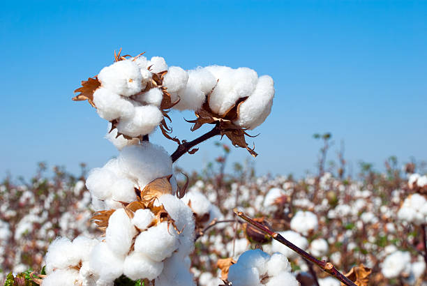
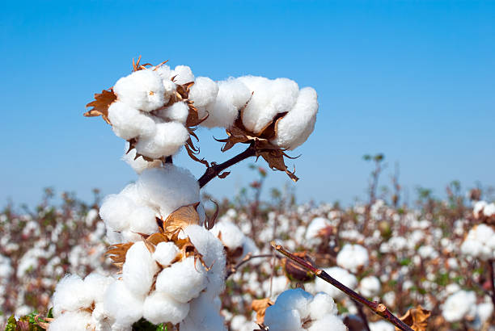

1.BLACK GRAM / 1.काला चना

Black gram, cultivated primarily in Manipur, is grown mainly in the Kharif season (June to September). It has significant market share in states like Uttar Pradesh and Maharashtra, where it is both sold and cultivated extensively. Black gram thrives in well-drained sandy loam or clay loam soils with a pH of 6.0 to 7.5. Ideal soil temperature ranges from 20-30°C. It requires about 70-90 days from sowing to harvest. Resources include moderate water and nutrients. Demand is particularly high in states like Maharashtra, Tamil Nadu, and Karnataka, where it's used in various culinary dishes and snacks.
मणिपुर में मुख्य रूप से उगाई जाने वाली काली दाल मुख्य रूप से खरीफ सीजन (जून से सितंबर) में उगाई जाती है। उत्तर प्रदेश और महाराष्ट्र जैसे राज्यों में इसकी महत्वपूर्ण बाजार हिस्सेदारी है, जहाँ इसे बड़े पैमाने पर बेचा और उगाया जाता है। काली दाल 6.0 से 7.5 के पीएच के साथ अच्छी जल निकासी वाली रेतीली दोमट या चिकनी दोमट मिट्टी में पनपती है। आदर्श मिट्टी का तापमान 20-30 डिग्री सेल्सियस के बीच होता है। बुवाई से कटाई तक इसे लगभग 70-90 दिनों की आवश्यकता होती है। संसाधनों में मध्यम पानी और पोषक तत्व शामिल हैं। महाराष्ट्र, तमिलनाडु और कर्नाटक जैसे राज्यों में इसकी मांग विशेष रूप से अधिक है, जहाँ इसका उपयोग विभिन्न पाक व्यंजनों और स्नैक्स में किया जाता है।
2.GREEN GRAM / 2.हरा चना

Green gram, grown in Manipur, is primarily cultivated in the Kharif season (June to September) and the Rabi season (October to February). It has notable market share in states like Maharashtra and Rajasthan, where it is widely sold and cultivated. Green gram prefers well-drained sandy loam or clay loam soils with a pH of 6.0 to 7.5. The ideal soil temperature ranges from 20-30°C. It typically takes 60-90 days to grow, requiring moderate water and nutrients. Demand is particularly high in states like Maharashtra, Gujarat, and Punjab, where it is popular in various traditional dishes.
मणिपुर में उगाए जाने वाले हरे चने की खेती मुख्य रूप से खरीफ सीजन (जून से सितंबर) और रबी सीजन (अक्टूबर से फरवरी) में की जाती है। महाराष्ट्र और राजस्थान जैसे राज्यों में इसका उल्लेखनीय बाजार हिस्सा है, जहाँ इसे व्यापक रूप से बेचा और उगाया जाता है। हरे चने को अच्छी जल निकासी वाली रेतीली दोमट या चिकनी दोमट मिट्टी पसंद है जिसका pH 6.0 से 7.5 है। आदर्श मिट्टी का तापमान 20-30 डिग्री सेल्सियस के बीच होता है। इसे उगने में आमतौर पर 60-90 दिन लगते हैं, जिसके लिए मध्यम पानी और पोषक तत्वों की आवश्यकता होती है। महाराष्ट्र, गुजरात और पंजाब जैसे राज्यों में इसकी मांग विशेष रूप से अधिक है, जहाँ यह विभिन्न पारंपरिक व्यंजनों में लोकप्रिय है।
3.PIGEON PEA / 3.कबूतर मटर


Pigeon pea, cultivated in Manipur, is primarily grown in the Kharif season (June to September). It has significant market share in states like Maharashtra and Uttar Pradesh, where it is both sold and extensively cultivated. Pigeon pea thrives in well-drained sandy loam or clay loam soils with a pH of 6.0 to 7.5. The ideal soil temperature ranges from 20-30°C. It typically takes 120-180 days to mature and requires moderate water and nutrients. Demand is particularly high in states like Maharashtra, Andhra Pradesh, and Tamil Nadu, where it is a staple in various traditional dishes and lentil preparations.
मणिपुर में उगाई जाने वाली अरहर की दाल मुख्य रूप से खरीफ सीजन (जून से सितंबर) में उगाई जाती है। महाराष्ट्र और उत्तर प्रदेश जैसे राज्यों में इसका महत्वपूर्ण बाजार हिस्सा है, जहाँ इसे बेचा भी जाता है और बड़े पैमाने पर इसकी खेती भी की जाती है। अरहर की दाल 6.0 से 7.5 के पीएच के साथ अच्छी जल निकासी वाली रेतीली दोमट या चिकनी दोमट मिट्टी में पनपती है। आदर्श मिट्टी का तापमान 20-30 डिग्री सेल्सियस के बीच होता है। इसे पकने में आमतौर पर 120-180 दिन लगते हैं और इसके लिए मध्यम पानी और पोषक तत्वों की आवश्यकता होती है। महाराष्ट्र, आंध्र प्रदेश और तमिलनाडु जैसे राज्यों में इसकी मांग विशेष रूप से अधिक है, जहाँ यह विभिन्न पारंपरिक व्यंजनों और दाल की तैयारी में मुख्य है।
4.HORSE GRAM / 4.घोड़ा ग्राम


Horse gram, grown in Manipur, is primarily cultivated during the Kharif season (June to September). It has notable market share in states like Karnataka and Tamil Nadu, where it is extensively sold and cultivated. Horse gram thrives in well-drained, dry, sandy loam or rocky soils with a pH of 6.0 to 7.5. The ideal soil temperature ranges from 20-30°C. It typically takes 90-120 days to mature and requires minimal water and nutrients, making it drought-resistant. Demand is particularly high in southern states like Karnataka, Tamil Nadu, and Andhra Pradesh, where it is used in various traditional dishes and health foods.
मणिपुर में उगाई जाने वाली कुल्थी की खेती मुख्य रूप से खरीफ सीजन (जून से सितंबर) के दौरान की जाती है। कर्नाटक और तमिलनाडु जैसे राज्यों में इसका उल्लेखनीय बाजार हिस्सा है, जहाँ इसे बड़े पैमाने पर बेचा और उगाया जाता है। कुल्थी की फसल अच्छी जल निकासी वाली, सूखी, रेतीली दोमट या पथरीली मिट्टी में पनपती है जिसका pH 6.0 से 7.5 होता है। आदर्श मिट्टी का तापमान 20-30 डिग्री सेल्सियस के बीच होता है। इसे पकने में आमतौर पर 90-120 दिन लगते हैं और इसे कम से कम पानी और पोषक तत्वों की आवश्यकता होती है, जिससे यह सूखा प्रतिरोधी बन जाती है। कर्नाटक, तमिलनाडु और आंध्र प्रदेश जैसे दक्षिणी राज्यों में इसकी मांग विशेष रूप से अधिक है, जहाँ इसका उपयोग विभिन्न पारंपरिक व्यंजनों और स्वास्थ्यवर्धक खाद्य पदार्थों में किया जाता है।
5.MUSTARD / 5.सरसों


Mustard, cultivated in Manipur, is primarily grown in the Rabi season (October to February). It has a significant market share in states like Rajasthan and Haryana, where it is extensively sold and cultivated. Mustard thrives in well-drained loamy or clayey soils with a pH of 6.0 to 7.5. The ideal soil temperature ranges from 10-30°C. It typically takes about 90-120 days to mature, requiring moderate water and nutrients. Demand is particularly high in states like Rajasthan, Uttar Pradesh, and Punjab, where mustard oil and seeds are popular for culinary and industrial uses.
मणिपुर में उगाई जाने वाली सरसों मुख्य रूप से रबी के मौसम (अक्टूबर से फरवरी) में उगाई जाती है। राजस्थान और हरियाणा जैसे राज्यों में इसका महत्वपूर्ण बाजार हिस्सा है, जहाँ इसे बड़े पैमाने पर बेचा और उगाया जाता है। सरसों 6.0 से 7.5 के पीएच के साथ अच्छी तरह से सूखा हुआ दोमट या चिकनी मिट्टी में पनपती है। आदर्श मिट्टी का तापमान 10-30 डिग्री सेल्सियस के बीच होता है। इसे पकने में आमतौर पर लगभग 90-120 दिन लगते हैं, जिसके लिए मध्यम पानी और पोषक तत्वों की आवश्यकता होती है। राजस्थान, उत्तर प्रदेश और पंजाब जैसे राज्यों में इसकी मांग विशेष रूप से अधिक है, जहाँ सरसों का तेल और बीज पाक और औद्योगिक उपयोगों के लिए लोकप्रिय हैं।
6.SESAME / 6.तिल


Sesame, grown in Manipur, is primarily cultivated in the Kharif season (June to September). It has a notable market share in states like Gujarat and Rajasthan, where it is extensively sold and cultivated. Sesame thrives in well-drained sandy loam or light clay soils with a pH of 6.0 to 7.5. The ideal soil temperature ranges from 20-30°C. It typically takes about 90-150 days to mature, requiring moderate water and nutrients. Demand is particularly high in states like Gujarat, Tamil Nadu, and Maharashtra, where sesame seeds and oil are essential for various culinary and traditional dishes.
मणिपुर में उगाए जाने वाले तिल की खेती मुख्य रूप से खरीफ सीजन (जून से सितंबर) में की जाती है। गुजरात और राजस्थान जैसे राज्यों में इसका उल्लेखनीय बाजार हिस्सा है, जहाँ इसे बड़े पैमाने पर बेचा और उगाया जाता है। तिल अच्छी तरह से सूखा हुआ रेतीली दोमट या हल्की चिकनी मिट्टी में पनपता है जिसका pH 6.0 से 7.5 होता है। आदर्श मिट्टी का तापमान 20-30 डिग्री सेल्सियस के बीच होता है। इसे पकने में आमतौर पर लगभग 90-150 दिन लगते हैं, जिसके लिए मध्यम पानी और पोषक तत्वों की आवश्यकता होती है। गुजरात, तमिलनाडु और महाराष्ट्र जैसे राज्यों में इसकी मांग विशेष रूप से अधिक है, जहाँ तिल और तेल विभिन्न पाक और पारंपरिक व्यंजनों के लिए आवश्यक हैं।
7.COTTON / 7.कपास
 

Cotton, cultivated in Manipur, is primarily grown in the Kharif season (June to September). It has a significant market share in states like Gujarat and Maharashtra, where it is extensively sold and cultivated. Cotton thrives in well-drained loamy or sandy soils with a pH of 6.0 to 8.0. The ideal soil temperature ranges from 20-30°C. It typically takes about 160-180 days to mature, requiring ample water and nutrients. Demand is particularly high in states like Gujarat, Maharashtra, and Punjab, where cotton is essential for the textile industry and various fabric production.
मणिपुर में उगाई जाने वाली कपास मुख्य रूप से खरीफ सीजन (जून से सितंबर) में उगाई जाती है। गुजरात और महाराष्ट्र जैसे राज्यों में इसका महत्वपूर्ण बाजार हिस्सा है, जहाँ इसे बड़े पैमाने पर बेचा और उगाया जाता है। कपास 6.0 से 8.0 पीएच के साथ अच्छी तरह से सूखा हुआ दोमट या रेतीली मिट्टी में पनपता है। आदर्श मिट्टी का तापमान 20-30 डिग्री सेल्सियस के बीच होता है। इसे पकने में आमतौर पर लगभग 160-180 दिन लगते हैं, जिसके लिए पर्याप्त पानी और पोषक तत्वों की आवश्यकता होती है। गुजरात, महाराष्ट्र और पंजाब जैसे राज्यों में इसकी मांग विशेष रूप से अधिक है, जहाँ कपड़ा उद्योग और विभिन्न कपड़े उत्पादन के लिए कपास आवश्यक है।
8.SUGARCANE / 8.गन्ना


Sugarcane, cultivated in Manipur, is primarily grown in the Kharif season (June to December). It has a notable market share in states like Uttar Pradesh and Maharashtra, where it is extensively sold and cultivated. Sugarcane thrives in deep, well-drained alluvial or sandy loam soils with a pH of 6.0 to 8.0. The ideal soil temperature ranges from 20-30°C. It typically takes about 10-12 months to mature, requiring substantial water and nutrients. Demand is particularly high in states like Uttar Pradesh, Maharashtra, and Tamil Nadu, where it is essential for sugar production and various agro-based industries.
मणिपुर में उगाए जाने वाले गन्ने की खेती मुख्य रूप से खरीफ सीजन (जून से दिसंबर) में की जाती है। उत्तर प्रदेश और महाराष्ट्र जैसे राज्यों में इसका उल्लेखनीय बाजार हिस्सा है, जहाँ इसे बड़े पैमाने पर बेचा और उगाया जाता है। गन्ना 6.0 से 8.0 पीएच वाली गहरी, अच्छी जल निकासी वाली जलोढ़ या रेतीली दोमट मिट्टी में पनपता है। आदर्श मिट्टी का तापमान 20-30 डिग्री सेल्सियस के बीच होता है। इसे पकने में आमतौर पर लगभग 10-12 महीने लगते हैं, जिसके लिए पर्याप्त पानी और पोषक तत्वों की आवश्यकता होती है। उत्तर प्रदेश, महाराष्ट्र और तमिलनाडु जैसे राज्यों में इसकी मांग विशेष रूप से अधिक है, जहाँ यह चीनी उत्पादन और विभिन्न कृषि-आधारित उद्योगों के लिए आवश्यक है।
9.BAMBOO / 9.बांस

Bamboo, grown in Manipur, can be cultivated year-round but thrives during the monsoon season (June to September). It has a significant market share in states like Assam and Meghalaya, where it is extensively sold and cultivated. Bamboo prefers well-drained, fertile soils with a pH of 6.0 to 7.5. The ideal soil temperature ranges from 20-30°C. It typically takes 3-5 years to mature, requiring moderate water and nutrients. Demand is particularly high in northeastern states like Assam and Tripura, where bamboo is essential for construction, handicrafts, and sustainable development initiatives.
मणिपुर में उगाए जाने वाले बांस की खेती साल भर की जा सकती है, लेकिन मानसून के मौसम (जून से सितंबर) के दौरान यह खूब फलता-फूलता है। असम और मेघालय जैसे राज्यों में इसका बाजार में महत्वपूर्ण हिस्सा है, जहाँ इसे बड़े पैमाने पर बेचा और उगाया जाता है। बांस को 6.0 से 7.5 के पीएच वाली अच्छी जल निकासी वाली, उपजाऊ मिट्टी पसंद है। आदर्श मिट्टी का तापमान 20-30 डिग्री सेल्सियस के बीच होता है। इसे परिपक्व होने में आमतौर पर 3-5 साल लगते हैं, जिसके लिए मध्यम पानी और पोषक तत्वों की आवश्यकता होती है। असम और त्रिपुरा जैसे पूर्वोत्तर राज्यों में इसकी मांग विशेष रूप से अधिक है, जहाँ निर्माण, हस्तशिल्प और सतत विकास पहलों के लिए बांस आवश्यक है।